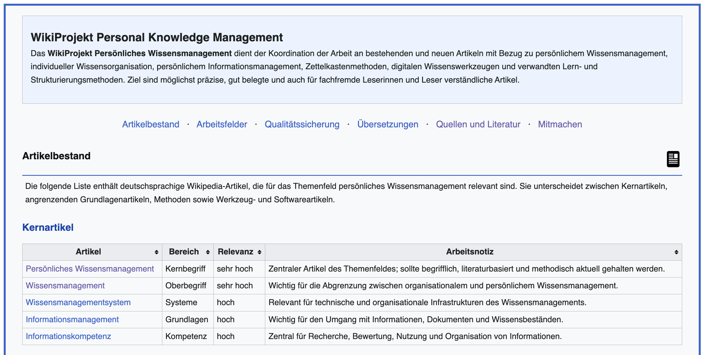

PKM
Die deutschsprachige Wikipedia hat bereits viele Artikel, die dem Thema Persönlichen Wissensmanagement (PKM) zugeordnet werden können. Einige zentrale Artikel existieren bereits wie z.B. Persönliches Wissensmanagement, Zettelkasten, Informationskompetenz, sind aber oft unvollständig ausgearbeitet, methodisch veraltet oder unzureichend belegt. Demgegenüber fehlen andere relevante Konzepte, Ansätze und verwandte Themen.
Heute habe ich das WikiProjekt Personal Knowledge Management angelegt, um, zusammen mit anderen Interessierten, diese Lücken systematisch zu schließen.

Das Projekt koordiniert die Arbeit an bestehenden und neuen Artikeln zu folgenden Bereichen:
Im Projektbestand sind Kernartikel und sogenannte Stubs — zusammen mit Arbeitsnotizen zur Relevanz und zu konkreten Verbesserungsbedarfen. Ziel ist es, existierende Artikel und solche, die noch ausfindig gemacht werden müssen, zu überarbeiten, andere neu zu schreiben oder ggf. aus anderen Sprachen zu übersetzen.
Das Projekt befindet sich aktuell im Aufbau. Wer im Themenfeld forscht, lehrt oder sich einfach dafür interessiert und schon erste Erfahrungen mit dem Editieren auf Wikipedia gesammelt hat, ist herzlich eingeladen: Beiträge und Unterstützung jeder Größenordnung sind willkommen — ein Beleg, ein Abschnitt, ein neuer Artikel. Bei Interesse freue ich mich über eine E-Mail.
„The Whole Wide World” von Wreckless Eric, 1977. Ein Song über das Suchen — passend für jeden, der ein Wissenssystem aufbaut. Anhören: YouTube | Spotify
Geschrieben an meinem Schreibtisch, Mai 2026.